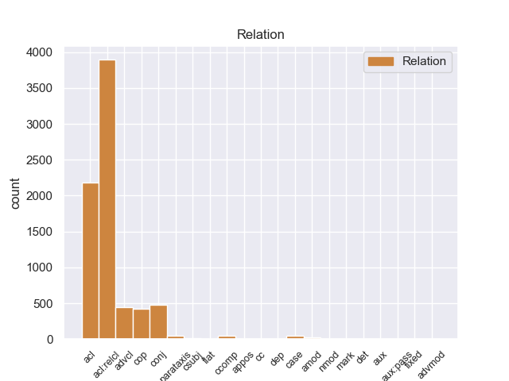
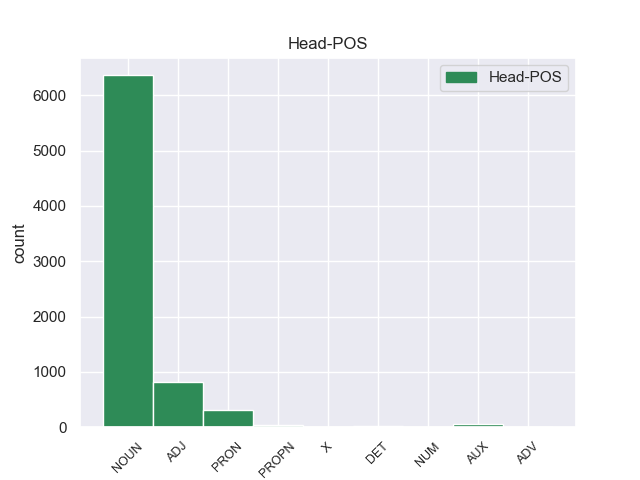
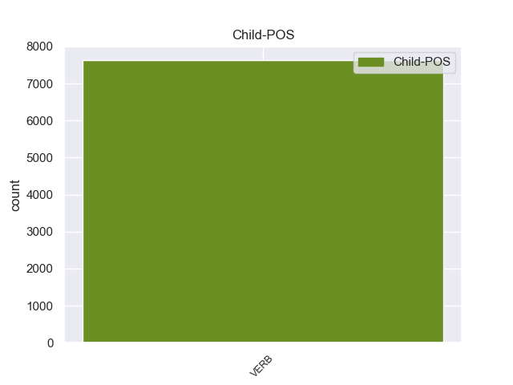

Distribution of features within this leaf



Agreement Rules sorted by frequency.
When the head token is NOUN and the dependent token is VERB.
1 En _ _ _ _ 0 _ _ _
2 1991 _ _ _ _ 0 _ _ _
3 , _ _ _ _ 0 _ _ _
4 como _ _ _ _ 0 _ _ _
5 ya _ _ _ _ 0 _ _ _
6 está _ _ _ _ 0 _ _ _
7 indicado _ _ _ _ 0 _ _ _
8 en _ _ _ _ 0 _ _ _
9 el _ _ _ _ 0 _ _ _
10 párrafo _ _ _ _ 0 _ _ _
11 anterior _ _ _ _ 0 _ _ _
12 , _ _ _ _ 0 _ _ _
13 se _ _ _ _ 0 _ _ _
14 creó _ _ _ _ 0 _ _ _
15 un _ _ _ _ 0 _ _ _
16 equipo _ _ _ _ 0 _ _ _
17 ad _ _ _ _ 0 _ _ _
18 hoc _ _ _ _ 0 _ _ _
19 para _ _ _ _ 0 _ _ _
20 averiguar _ _ _ _ 0 _ _ _
21 como _ _ _ _ 0 _ _ _
22 se _ _ _ _ 0 _ _ _
23 podía _ _ _ _ 0 _ _ _
24 desarrollar _ _ _ _ 0 _ _ _
25 el _ _ _ _ 0 _ _ _
26 Dialogo _ _ _ _ 0 _ _ _
27 Social _ _ _ _ 0 _ _ _
28 , _ _ _ _ 0 _ _ _
29 este _ _ _ _ 0 _ _ _
30 equipo _ _ _ _ 0 _ _ _
31 estaba _ _ _ _ 0 _ _ _
32 formado _ _ _ _ 0 _ _ _
33 por _ _ _ _ 0 _ _ _
34 representantes _ _ _ _ 0 _ _ _
35 de _ _ _ _ 0 _ _ _
36 todas _ _ _ _ 0 _ _ _
37 las _ _ _ _ 0 _ _ _
38 organizaciones organización NOUN _ Gender=Fem|Number=Plur 0 _ _ _
39 relacionadas relacionado VERB _ Gender=Fem|Number=Plur|VerbForm=Part 38 acl _ _
40 con _ _ _ _ 0 _ _ _
41 CES _ _ _ _ 0 _ _ _
42 , _ _ _ _ 0 _ _ _
43 UNICE _ _ _ _ 0 _ _ _
44 y _ _ _ _ 0 _ _ _
45 CEEP _ _ _ _ 0 _ _ _
46 ; _ _ _ _ 0 _ _ _
When the head token is NOUN and the dependent token is VERB. and the head token is ADJ and the dependent token is VERB.
1 Jazmin _ _ _ _ 0 _ _ _
2 es _ _ _ _ 0 _ _ _
3 todo _ _ _ _ 0 _ _ _
4 lo _ _ _ _ 0 _ _ _
5 contrario _ _ _ _ 0 _ _ _
6 , _ _ _ _ 0 _ _ _
7 es _ _ _ _ 0 _ _ _
8 tímida tímido ADJ _ Gender=Fem|Number=Sing 0 _ _ _
9 y _ _ _ _ 0 _ _ _
10 callada _ _ _ _ 0 _ _ _
11 , _ _ _ _ 0 _ _ _
12 pero _ _ _ _ 0 _ _ _
13 siempre _ _ _ _ 0 _ _ _
14 es _ _ _ _ 0 _ _ _
15 arrastrada arrastrado VERB _ Gender=Fem|Number=Sing|VerbForm=Part 8 conj _ _
16 por _ _ _ _ 0 _ _ _
17 las _ _ _ _ 0 _ _ _
18 locuras _ _ _ _ 0 _ _ _
19 y _ _ _ _ 0 _ _ _
20 travesuras _ _ _ _ 0 _ _ _
21 que _ _ _ _ 0 _ _ _
22 inventa _ _ _ _ 0 _ _ _
23 Alma _ _ _ _ 0 _ _ _
24 . _ _ _ _ 0 _ _ _
When the head token is NOUN and the dependent token is VERB. and the head token is ADJ and the dependent token is VERB. and the head token is PRON and the dependent token is VERB.
1 Está _ _ _ _ 0 _ _ _
2 considerado considerar VERB _ Gender=Masc|Number=Sing|Tense=Past|VerbForm=Part 3 cop _ _
3 uno uno PRON _ Gender=Masc|Number=Sing|PronType=Ind 0 _ _ _
4 de _ _ _ _ 0 _ _ _
5 los _ _ _ _ 0 _ _ _
6 mejores _ _ _ _ 0 _ _ _
7 jugadores _ _ _ _ 0 _ _ _
8 de _ _ _ _ 0 _ _ _
9 la _ _ _ _ 0 _ _ _
10 historia _ _ _ _ 0 _ _ _
11 de _ _ _ _ 0 _ _ _
12 Dinamarca _ _ _ _ 0 _ _ _
13 , _ _ _ _ 0 _ _ _
14 junto _ _ _ _ 0 _ _ _
15 a _ _ _ _ 0 _ _ _
16 otras _ _ _ _ 0 _ _ _
17 grandes _ _ _ _ 0 _ _ _
18 estrellas _ _ _ _ 0 _ _ _
19 como _ _ _ _ 0 _ _ _
20 Michael _ _ _ _ 0 _ _ _
21 Laudrup _ _ _ _ 0 _ _ _
22 , _ _ _ _ 0 _ _ _
23 Peter _ _ _ _ 0 _ _ _
24 Schmeichel _ _ _ _ 0 _ _ _
25 o _ _ _ _ 0 _ _ _
26 Allan _ _ _ _ 0 _ _ _
27 Simonsen _ _ _ _ 0 _ _ _
28 . _ _ _ _ 0 _ _ _
When the head token is NOUN and the dependent token is VERB. and the head token is ADJ and the dependent token is VERB. and the head token is PRON and the dependent token is VERB. and the head token is PROPN and the dependent token is VERB.
1 De _ _ _ _ 0 _ _ _
2 esta _ _ _ _ 0 _ _ _
3 época _ _ _ _ 0 _ _ _
4 data _ _ _ _ 0 _ _ _
5 toda _ _ _ _ 0 _ _ _
6 una _ _ _ _ 0 _ _ _
7 serie _ _ _ _ 0 _ _ _
8 de _ _ _ _ 0 _ _ _
9 Madonas madonas PROPN _ Gender=Fem|Number=Plur 0 _ _ _
10 influidas influido VERB _ Gender=Fem|Number=Plur|VerbForm=Part 9 acl _ _
11 por _ _ _ _ 0 _ _ _
12 Lippi _ _ _ _ 0 _ _ _
13 . _ _ _ _ 0 _ _ _
When the head token is NOUN and the dependent token is VERB. and the head token is ADJ and the dependent token is VERB. and the head token is PRON and the dependent token is VERB. and the head token is PROPN and the dependent token is VERB. and the head token is AUX and the dependent token is VERB.
1 La _ _ _ _ 0 _ _ _
2 característica _ _ _ _ 0 _ _ _
3 definitoria _ _ _ _ 0 _ _ _
4 de _ _ _ _ 0 _ _ _
5 la _ _ _ _ 0 _ _ _
6 isotermia _ _ _ _ 0 _ _ _
7 es ser AUX _ Mood=Ind|Number=Sing|Person=3|Tense=Pres|VerbForm=Fin 0 _ _ _
8 que _ _ _ _ 0 _ _ _
9 la _ _ _ _ 0 _ _ _
10 variación _ _ _ _ 0 _ _ _
11 térmica _ _ _ _ 0 _ _ _
12 de _ _ _ _ 0 _ _ _
13 las _ _ _ _ 0 _ _ _
14 temperaturas _ _ _ _ 0 _ _ _
15 medias _ _ _ _ 0 _ _ _
16 de _ _ _ _ 0 _ _ _
17 todos _ _ _ _ 0 _ _ _
18 los _ _ _ _ 0 _ _ _
19 meses _ _ _ _ 0 _ _ _
20 de _ _ _ _ 0 _ _ _
21 el _ _ _ _ 0 _ _ _
22 año _ _ _ _ 0 _ _ _
23 no _ _ _ _ 0 _ _ _
24 supera superar VERB _ Mood=Ind|Number=Sing|Person=3|Tense=Pres|VerbForm=Fin 7 ccomp _ _
25 los _ _ _ _ 0 _ _ _
26 1 _ _ _ _ 0 _ _ _
27 º _ _ _ _ 0 _ _ _
28 3 _ _ _ _ 0 _ _ _
29 º _ _ _ _ 0 _ _ _
30 C. _ _ _ _ 0 _ _ _
31 Se _ _ _ _ 0 _ _ _
32 le _ _ _ _ 0 _ _ _
33 suele _ _ _ _ 0 _ _ _
34 denominar _ _ _ _ 0 _ _ _
35 " _ _ _ _ 0 _ _ _
36 la _ _ _ _ 0 _ _ _
37 eterna _ _ _ _ 0 _ _ _
38 primavera _ _ _ _ 0 _ _ _
39 " _ _ _ _ 0 _ _ _
40 . _ _ _ _ 0 _ _ _
When the head token is NOUN and the dependent token is VERB. and the head token is ADJ and the dependent token is VERB. and the head token is PRON and the dependent token is VERB. and the head token is PROPN and the dependent token is VERB. and the head token is AUX and the dependent token is VERB. and the head token is DET and the dependent token is VERB.
1 ¿ _ _ _ _ 0 _ _ _
2 Ella _ _ _ _ 0 _ _ _
3 conoce _ _ _ _ 0 _ _ _
4 de _ _ _ _ 0 _ _ _
5 verdad _ _ _ _ 0 _ _ _
6 los el DET _ Definite=Def|Gender=Masc|Number=Plur|PronType=Art 0 _ _ _
7 que _ _ _ _ 0 _ _ _
8 están estar VERB _ Mood=Ind|Number=Plur|Person=3|Tense=Pres|VerbForm=Fin 6 acl:relcl _ _
9 de _ _ _ _ 0 _ _ _
10 su _ _ _ _ 0 _ _ _
11 lado _ _ _ _ 0 _ _ _
12 ? _ _ _ _ 0 _ _ _
When the head token is NOUN and the dependent token is VERB. and the head token is ADJ and the dependent token is VERB. and the head token is PRON and the dependent token is VERB. and the head token is PROPN and the dependent token is VERB. and the head token is AUX and the dependent token is VERB. and the head token is DET and the dependent token is VERB. and the head token is NUM and the dependent token is VERB.
1 Cada _ _ _ _ 0 _ _ _
2 título _ _ _ _ 0 _ _ _
3 , _ _ _ _ 0 _ _ _
4 de _ _ _ _ 0 _ _ _
5 los _ _ _ _ 0 _ _ _
6 trece trece NUM _ Number=Plur|NumType=Card 0 _ _ _
7 que _ _ _ _ 0 _ _ _
8 se _ _ _ _ 0 _ _ _
9 publicaron publicar VERB _ Mood=Ind|Number=Plur|Person=3|Tense=Past|VerbForm=Fin 6 acl:relcl _ _
10 , _ _ _ _ 0 _ _ _
11 estaba _ _ _ _ 0 _ _ _
12 dedicado _ _ _ _ 0 _ _ _
13 a _ _ _ _ 0 _ _ _
14 el _ _ _ _ 0 _ _ _
15 trabajo _ _ _ _ 0 _ _ _
16 de _ _ _ _ 0 _ _ _
17 un _ _ _ _ 0 _ _ _
18 solo _ _ _ _ 0 _ _ _
19 autor _ _ _ _ 0 _ _ _
20 y _ _ _ _ 0 _ _ _
21 supuso _ _ _ _ 0 _ _ _
22 un _ _ _ _ 0 _ _ _
23 soplo _ _ _ _ 0 _ _ _
24 de _ _ _ _ 0 _ _ _
25 aire _ _ _ _ 0 _ _ _
26 fresco _ _ _ _ 0 _ _ _
27 en _ _ _ _ 0 _ _ _
28 una _ _ _ _ 0 _ _ _
29 industria _ _ _ _ 0 _ _ _
30 editorial _ _ _ _ 0 _ _ _
31 demasiado _ _ _ _ 0 _ _ _
32 centrada _ _ _ _ 0 _ _ _
33 , _ _ _ _ 0 _ _ _
34 en _ _ _ _ 0 _ _ _
35 esa _ _ _ _ 0 _ _ _
36 época _ _ _ _ 0 _ _ _
37 , _ _ _ _ 0 _ _ _
38 en _ _ _ _ 0 _ _ _
39 el _ _ _ _ 0 _ _ _
40 cómic _ _ _ _ 0 _ _ _
41 de _ _ _ _ 0 _ _ _
42 superhéroes _ _ _ _ 0 _ _ _
43 y _ _ _ _ 0 _ _ _
44 en _ _ _ _ 0 _ _ _
45 la _ _ _ _ 0 _ _ _
46 historieta _ _ _ _ 0 _ _ _
47 francobelga _ _ _ _ 0 _ _ _
48 . _ _ _ _ 0 _ _ _
When the head token is NOUN and the dependent token is VERB. and the head token is ADJ and the dependent token is VERB. and the head token is PRON and the dependent token is VERB. and the head token is PROPN and the dependent token is VERB. and the head token is AUX and the dependent token is VERB. and the head token is DET and the dependent token is VERB. and the head token is NUM and the dependent token is VERB. and the head token is ADV and the dependent token is VERB.
1 Su _ _ _ _ 0 _ _ _
2 reserva _ _ _ _ 0 _ _ _
3 de _ _ _ _ 0 _ _ _
4 locura _ _ _ _ 0 _ _ _
5 está _ _ _ _ 0 _ _ _
6 lejos lejos ADV _ Gender=Masc|Number=Sing|VerbForm=Part 0 _ _ _
7 de _ _ _ _ 0 _ _ _
8 fondo _ _ _ _ 0 _ _ _
9 , _ _ _ _ 0 _ _ _
10 y _ _ _ _ 0 _ _ _
11 parece parecer VERB _ Mood=Ind|Number=Sing|Person=3|Tense=Pres|VerbForm=Fin 6 conj _ _
12 guardar _ _ _ _ 0 _ _ _
13 todo _ _ _ _ 0 _ _ _
14 por _ _ _ _ 0 _ _ _
15 sus _ _ _ _ 0 _ _ _
16 vídeos _ _ _ _ 0 _ _ _
17 musicales _ _ _ _ 0 _ _ _
18 , _ _ _ _ 0 _ _ _
19 y _ _ _ _ 0 _ _ _
20 la _ _ _ _ 0 _ _ _
21 quiero _ _ _ _ 0 _ _ _
22 para _ _ _ _ 0 _ _ _
23 que _ _ _ _ 0 _ _ _
24 [ _ _ _ _ 0 _ _ _
25 ... _ _ _ _ 0 _ _ _
26 ] _ _ _ _ 0 _ _ _
27 El _ _ _ _ 0 _ _ _
28 vídeo _ _ _ _ 0 _ _ _
29 es _ _ _ _ 0 _ _ _
30 impresionante _ _ _ _ 0 _ _ _
31 y _ _ _ _ 0 _ _ _
32 penosamente _ _ _ _ 0 _ _ _
33 de _ _ _ _ 0 _ _ _
34 forma _ _ _ _ 0 _ _ _
35 fragmentada _ _ _ _ 0 _ _ _
36 . _ _ _ _ 0 _ _ _
37 " _ _ _ _ 0 _ _ _
When the head token is NOUN and the dependent token is VERB. and the head token is ADJ and the dependent token is VERB. and the head token is PRON and the dependent token is VERB. and the head token is PROPN and the dependent token is VERB. and the head token is AUX and the dependent token is VERB. and the head token is DET and the dependent token is VERB. and the head token is NUM and the dependent token is VERB. and the head token is ADV and the dependent token is VERB. and the head token is X and the dependent token is VERB.
1 <ref _ _ _ _ 0 _ _ _
2 name="REAL name="real X _ Gender=Masc|Number=Sing 0 _ _ _
3 DECRETO _ _ _ _ 0 _ _ _
4 899/2001" _ _ _ _ 0 _ _ _
5 REAL _ _ _ _ 0 _ _ _
6 DECRETO _ _ _ _ 0 _ _ _
7 899 _ _ _ _ 0 _ _ _
8 / _ _ _ _ 0 _ _ _
9 2001 _ _ _ _ 0 _ _ _
10 , _ _ _ _ 0 _ _ _
11 de _ _ _ _ 0 _ _ _
12 27 _ _ _ _ 0 _ _ _
13 de _ _ _ _ 0 _ _ _
14 julio _ _ _ _ 0 _ _ _
15 , _ _ _ _ 0 _ _ _
16 por _ _ _ _ 0 _ _ _
17 el _ _ _ _ 0 _ _ _
18 que _ _ _ _ 0 _ _ _
19 se _ _ _ _ 0 _ _ _
20 aprueba apruebar VERB _ Mood=Ind|Number=Sing|Person=3|Tense=Pres|VerbForm=Fin 2 acl:relcl _ _
21 el _ _ _ _ 0 _ _ _
22 Reglamento _ _ _ _ 0 _ _ _
23 de _ _ _ _ 0 _ _ _
24 la _ _ _ _ 0 _ _ _
25 Real _ _ _ _ 0 _ _ _
26 y _ _ _ _ 0 _ _ _
27 Militar _ _ _ _ 0 _ _ _
28 Orden _ _ _ _ 0 _ _ _
29 de _ _ _ _ 0 _ _ _
30 San _ _ _ _ 0 _ _ _
31 Fernando _ _ _ _ 0 _ _ _
32 . _ _ _ _ 0 _ _ _
Disagree Examples:
1 También _ _ _ _ 0 _ _ _
2 hay _ _ _ _ 0 _ _ _
3 hormonas _ _ _ _ 0 _ _ _
4 tróficas _ _ _ _ 0 _ _ _
5 y _ _ _ _ 0 _ _ _
6 no _ _ _ _ 0 _ _ _
7 tróficas _ _ _ _ 0 _ _ _
8 , _ _ _ _ 0 _ _ _
9 según _ _ _ _ 0 _ _ _
10 el _ _ _ _ 0 _ _ _
11 blanco blanco NOUN _ Gender=Masc|Number=Sing 0 _ _ _
12 sobre _ _ _ _ 0 _ _ _
13 el _ _ _ _ 0 _ _ _
14 cual _ _ _ _ 0 _ _ _
15 actúan actuar VERB _ Mood=Ind|Number=Plur|Person=3|Tense=Pres|VerbForm=Fin 11 acl:relcl _ SpaceAfter=No
16 . _ _ _ _ 0 _ _ _
1 Una _ _ _ _ 0 _ _ _
2 vez vez NOUN _ Gender=Fem|Number=Sing 0 _ _ _
3 recogidos recogido VERB _ Gender=Masc|Number=Plur|VerbForm=Part 2 acl _ _
4 y _ _ _ _ 0 _ _ _
5 catalogados _ _ _ _ 0 _ _ _
6 , _ _ _ _ 0 _ _ _
7 el _ _ _ _ 0 _ _ _
8 testimonio _ _ _ _ 0 _ _ _
9 se _ _ _ _ 0 _ _ _
10 incluirá _ _ _ _ 0 _ _ _
11 en _ _ _ _ 0 _ _ _
12 el _ _ _ _ 0 _ _ _
13 Archivo _ _ _ _ 0 _ _ _
14 Histórico _ _ _ _ 0 _ _ _
15 Visual _ _ _ _ 0 _ _ _
16 , _ _ _ _ 0 _ _ _
17 que _ _ _ _ 0 _ _ _
18 contiene _ _ _ _ 0 _ _ _
19 todos _ _ _ _ 0 _ _ _
20 los _ _ _ _ 0 _ _ _
21 testimonios _ _ _ _ 0 _ _ _
22 ya _ _ _ _ 0 _ _ _
23 recogidos _ _ _ _ 0 _ _ _
24 por _ _ _ _ 0 _ _ _
25 el _ _ _ _ 0 _ _ _
26 Instituto _ _ _ _ 0 _ _ _
27 . _ _ _ _ 0 _ _ _
1 Las _ _ _ _ 0 _ _ _
2 gorditas _ _ _ _ 0 _ _ _
3 son _ _ _ _ 0 _ _ _
4 en _ _ _ _ 0 _ _ _
5 realidad _ _ _ _ 0 _ _ _
6 tortillas tortilla NOUN _ Gender=Fem|Number=Plur 0 _ _ _
7 hechas _ _ _ _ 0 _ _ _
8 a _ _ _ _ 0 _ _ _
9 mano _ _ _ _ 0 _ _ _
10 , _ _ _ _ 0 _ _ _
11 en _ _ _ _ 0 _ _ _
12 las _ _ _ _ 0 _ _ _
13 cuales _ _ _ _ 0 _ _ _
14 antes _ _ _ _ 0 _ _ _
15 de _ _ _ _ 0 _ _ _
16 el _ _ _ _ 0 _ _ _
17 cocimiento _ _ _ _ 0 _ _ _
18 , _ _ _ _ 0 _ _ _
19 el _ _ _ _ 0 _ _ _
20 disco _ _ _ _ 0 _ _ _
21 de _ _ _ _ 0 _ _ _
22 masa _ _ _ _ 0 _ _ _
23 cruda _ _ _ _ 0 _ _ _
24 ha _ _ _ _ 0 _ _ _
25 sido _ _ _ _ 0 _ _ _
26 rellenado rellenar VERB _ Gender=Masc|Number=Sing|Tense=Past|VerbForm=Part 6 parataxis _ _
27 con _ _ _ _ 0 _ _ _
28 otro _ _ _ _ 0 _ _ _
29 ingrediente _ _ _ _ 0 _ _ _
30 ( _ _ _ _ 0 _ _ _
31 generalmente _ _ _ _ 0 _ _ _
32 , _ _ _ _ 0 _ _ _
33 chicharrón _ _ _ _ 0 _ _ _
34 prensado _ _ _ _ 0 _ _ _
35 o _ _ _ _ 0 _ _ _
36 queso _ _ _ _ 0 _ _ _
37 fresco _ _ _ _ 0 _ _ _
38 ) _ _ _ _ 0 _ _ _
39 ; _ _ _ _ 0 _ _ _
1 Para _ _ _ _ 0 _ _ _
2 la _ _ _ _ 0 _ _ _
3 época _ _ _ _ 0 _ _ _
4 de _ _ _ _ 0 _ _ _
5 la _ _ _ _ 0 _ _ _
6 Revolución _ _ _ _ 0 _ _ _
7 iraní _ _ _ _ 0 _ _ _
8 de _ _ _ _ 0 _ _ _
9 1978-1979 _ _ _ _ 0 _ _ _
10 , _ _ _ _ 0 _ _ _
11 las _ _ _ _ 0 _ _ _
12 cinco _ _ _ _ 0 _ _ _
13 compañías compañía NOUN _ Gender=Fem|Number=Plur 0 _ _ _
14 internacionales _ _ _ _ 0 _ _ _
15 más _ _ _ _ 0 _ _ _
16 importantes _ _ _ _ 0 _ _ _
17 que _ _ _ _ 0 _ _ _
18 habían _ _ _ _ 0 _ _ _
19 firmado firmar VERB _ Gender=Masc|Number=Sing|Tense=Past|VerbForm=Part 13 acl:relcl _ _
20 acuerdos _ _ _ _ 0 _ _ _
21 con _ _ _ _ 0 _ _ _
22 la _ _ _ _ 0 _ _ _
23 NIOC _ _ _ _ 0 _ _ _
24 solo _ _ _ _ 0 _ _ _
25 representaron _ _ _ _ 0 _ _ _
26 el _ _ _ _ 0 _ _ _
27 10,4 _ _ _ _ 0 _ _ _
28 % _ _ _ _ 0 _ _ _
29 de _ _ _ _ 0 _ _ _
30 la _ _ _ _ 0 _ _ _
31 producción _ _ _ _ 0 _ _ _
32 total _ _ _ _ 0 _ _ _
33 de _ _ _ _ 0 _ _ _
34 petróleo _ _ _ _ 0 _ _ _
35 . _ _ _ _ 0 _ _ _
1 El _ _ _ _ 0 _ _ _
2 origen _ _ _ _ 0 _ _ _
3 de _ _ _ _ 0 _ _ _
4 este _ _ _ _ 0 _ _ _
5 Municipio _ _ _ _ 0 _ _ _
6 es _ _ _ _ 0 _ _ _
7 desconocido desconocido ADJ _ Gender=Masc|Number=Sing|VerbForm=Part 0 _ _ _
8 a _ _ _ _ 0 _ _ _
9 el _ _ _ _ 0 _ _ _
10 igual _ _ _ _ 0 _ _ _
11 que _ _ _ _ 0 _ _ _
12 el _ _ _ _ 0 _ _ _
13 de _ _ _ _ 0 _ _ _
14 los _ _ _ _ 0 _ _ _
15 otros _ _ _ _ 0 _ _ _
16 pueblos _ _ _ _ 0 _ _ _
17 mixes _ _ _ _ 0 _ _ _
18 , _ _ _ _ 0 _ _ _
19 aunque _ _ _ _ 0 _ _ _
20 existen existir VERB _ Mood=Ind|Number=Plur|Person=3|Tense=Pres|VerbForm=Fin 7 advcl _ _
21 tres _ _ _ _ 0 _ _ _
22 teorías _ _ _ _ 0 _ _ _
23 de _ _ _ _ 0 _ _ _
24 el _ _ _ _ 0 _ _ _
25 origen _ _ _ _ 0 _ _ _
26 de _ _ _ _ 0 _ _ _
27 los _ _ _ _ 0 _ _ _
28 mixes _ _ _ _ 0 _ _ _
29 : _ _ _ _ 0 _ _ _
30 Una _ _ _ _ 0 _ _ _
31 Inca _ _ _ _ 0 _ _ _
32 de _ _ _ _ 0 _ _ _
33 el _ _ _ _ 0 _ _ _
34 Perú _ _ _ _ 0 _ _ _
35 , _ _ _ _ 0 _ _ _
36 otra _ _ _ _ 0 _ _ _
37 Europea _ _ _ _ 0 _ _ _
38 y _ _ _ _ 0 _ _ _
39 otra _ _ _ _ 0 _ _ _
40 Olmeca _ _ _ _ 0 _ _ _
41 . _ _ _ _ 0 _ _ _